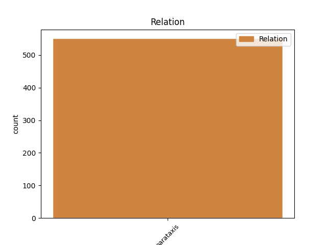
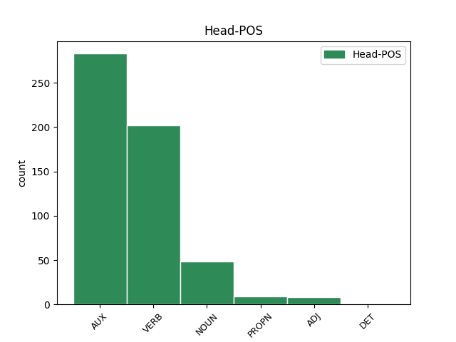
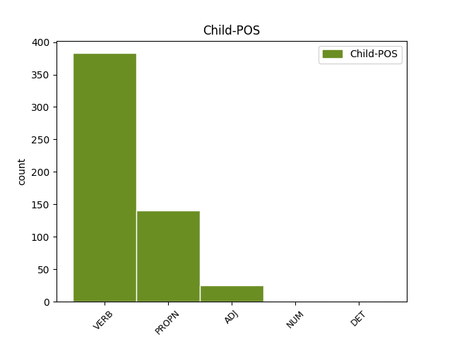

Distribution of features within this leaf



Agreement Rules sorted by frequency.
- When the dependent token is the parataxis(parataxis) of the head token, and the dependent token is VERB.
1 Idućeg _ _ _ _ 0 _ _ _
2 dana dan NOUN Ncmsg Case=Gen|Gender=Masc|Number=Sing 0 _ _ _
3 , _ _ _ _ 0 _ _ _
4 znači značiti VERB Vmr3s Mood=Ind|Number=Sing|Person=3|Tense=Pres|VerbForm=Fin 2 parataxis _ _
5 do _ _ _ _ 0 _ _ _
6 nedjelje _ _ _ _ 0 _ _ _
7 10.02.2013. _ _ _ _ 0 _ _ _
8 u _ _ _ _ 0 _ _ _
9 ponoć _ _ _ _ 0 _ _ _
10 , _ _ _ _ 0 _ _ _
11 pošalji _ _ _ _ 0 _ _ _
12 nam _ _ _ _ 0 _ _ _
13 svoje _ _ _ _ 0 _ _ _
14 fotografije _ _ _ _ 0 _ _ _
15 . _ _ _ _ 0 _ _ _
1 Bodo Bodo PROPN Npmsn Case=Nom|Gender=Masc|Number=Sing 6 parataxis _ _
2 Hombach _ _ _ _ 0 _ _ _
3 : _ _ _ _ 0 _ _ _
4 ' _ _ _ _ 0 _ _ _
5 Novinarstvo _ _ _ _ 0 _ _ _
6 mora morati VERB Vmr3s Mood=Ind|Number=Sing|Person=3|Tense=Pres|VerbForm=Fin 0 _ _ _
7 biti _ _ _ _ 0 _ _ _
8 kvalitetno _ _ _ _ 0 _ _ _
9 , _ _ _ _ 0 _ _ _
10 profesionalno _ _ _ _ 0 _ _ _
11 i _ _ _ _ 0 _ _ _
12 vjerodostojno _ _ _ _ 0 _ _ _
13 ' _ _ _ _ 0 _ _ _
1 Kod _ _ _ _ 0 _ _ _
2 nas _ _ _ _ 0 _ _ _
3 je _ _ _ _ 0 _ _ _
4 provedena _ _ _ _ 0 _ _ _
5 jedna _ _ _ _ 0 _ _ _
6 necivilizirana _ _ _ _ 0 _ _ _
7 i _ _ _ _ 0 _ _ _
8 kontraproduktivna _ _ _ _ 0 _ _ _
9 stvar stvar NOUN Ncfsn Case=Nom|Gender=Fem|Number=Sing 0 _ _ _
10 ( _ _ _ _ 0 _ _ _
11 zvana zvan ADJ Agpfsny Case=Nom|Definite=Def|Degree=Pos|Gender=Fem|Number=Sing 9 parataxis _ _
12 pretvorba _ _ _ _ 0 _ _ _
13 i _ _ _ _ 0 _ _ _
14 privatizacija _ _ _ _ 0 _ _ _
15 ) _ _ _ _ 0 _ _ _
16 i _ _ _ _ 0 _ _ _
17 to _ _ _ _ 0 _ _ _
18 jest _ _ _ _ 0 _ _ _
19 problem _ _ _ _ 0 _ _ _
20 koji _ _ _ _ 0 _ _ _
21 kod _ _ _ _ 0 _ _ _
22 nas _ _ _ _ 0 _ _ _
23 stalno _ _ _ _ 0 _ _ _
24 visi _ _ _ _ 0 _ _ _
25 i _ _ _ _ 0 _ _ _
26 traži _ _ _ _ 0 _ _ _
27 adekvatni _ _ _ _ 0 _ _ _
28 odgovor _ _ _ _ 0 _ _ _
29 . _ _ _ _ 0 _ _ _
1 Niti _ _ _ _ 0 _ _ _
2 jedna jedan NUM Mlcfsn Case=Nom|Gender=Fem|Number=Sing|NumType=Card 3 parataxis _ _
3 manžeta manžeta NOUN Ncfsn Case=Nom|Gender=Fem|Number=Sing 0 _ _ _
4 nije _ _ _ _ 0 _ _ _
5 nagrižena _ _ _ _ 0 _ _ _
6 ili _ _ _ _ 0 _ _ _
7 oštećena _ _ _ _ 0 _ _ _
8 , _ _ _ _ 0 _ _ _
9 niti _ _ _ _ 0 _ _ _
10 je _ _ _ _ 0 _ _ _
11 narušena _ _ _ _ 0 _ _ _
12 geometrija _ _ _ _ 0 _ _ _
13 ovjesa _ _ _ _ 0 _ _ _
14 , _ _ _ _ 0 _ _ _
15 a _ _ _ _ 0 _ _ _
16 u _ _ _ _ 0 _ _ _
17 jednako _ _ _ _ 0 _ _ _
18 pohvalnom _ _ _ _ 0 _ _ _
19 stanju _ _ _ _ 0 _ _ _
20 zatekli _ _ _ _ 0 _ _ _
21 smo _ _ _ _ 0 _ _ _
22 još _ _ _ _ 0 _ _ _
23 uvijek _ _ _ _ 0 _ _ _
24 originalan _ _ _ _ 0 _ _ _
25 ispušni _ _ _ _ 0 _ _ _
26 sustav _ _ _ _ 0 _ _ _
27 . _ _ _ _ 0 _ _ _
Disagree Examples:
1 Kaznena _ _ _ _ 0 _ _ _
2 presuda _ _ _ _ 0 _ _ _
3 i _ _ _ _ 0 _ _ _
4 zatvorska _ _ _ _ 0 _ _ _
5 kazna _ _ _ _ 0 _ _ _
6 medijskom _ _ _ _ 0 _ _ _
7 mogulu _ _ _ _ 0 _ _ _
8 Veliji _ _ _ _ 0 _ _ _
9 Ramkovskom _ _ _ _ 0 _ _ _
10 , _ _ _ _ 0 _ _ _
11 koji _ _ _ _ 0 _ _ _
12 je _ _ _ _ 0 _ _ _
13 često _ _ _ _ 0 _ _ _
14 kritizirao _ _ _ _ 0 _ _ _
15 makedonsku _ _ _ _ 0 _ _ _
16 vladu _ _ _ _ 0 _ _ _
17 , _ _ _ _ 0 _ _ _
18 mogla _ _ _ _ 0 _ _ _
19 bi biti AUX Vaa3s Mood=Cnd|Number=Sing|Person=3|Tense=Past|VerbForm=Fin 0 _ _ _
20 zaplašiti _ _ _ _ 0 _ _ _
21 medije _ _ _ _ 0 _ _ _
22 , _ _ _ _ 0 _ _ _
23 kažu kazati VERB Vmr3p Mood=Ind|Number=Plur|Person=3|Tense=Pres|VerbForm=Fin 19 parataxis _ _
24 novinari _ _ _ _ 0 _ _ _
25 u _ _ _ _ 0 _ _ _
26 toj _ _ _ _ 0 _ _ _
27 maloj _ _ _ _ 0 _ _ _
28 balkanskoj _ _ _ _ 0 _ _ _
29 državi _ _ _ _ 0 _ _ _
30 . _ _ _ _ 0 _ _ _
1 " _ _ _ _ 0 _ _ _
2 Bio _ _ _ _ 0 _ _ _
3 sam biti AUX Var1s Mood=Ind|Number=Sing|Person=1|Tense=Pres|VerbForm=Fin 0 _ _ _
4 u _ _ _ _ 0 _ _ _
5 školi _ _ _ _ 0 _ _ _
6 na _ _ _ _ 0 _ _ _
7 dan _ _ _ _ 0 _ _ _
8 izbora _ _ _ _ 0 _ _ _
9 -- _ _ _ _ 0 _ _ _
10 imamo imati VERB Vmr1p Mood=Ind|Number=Plur|Person=1|Tense=Pres|VerbForm=Fin 3 parataxis _ _
11 veliki _ _ _ _ 0 _ _ _
12 televizor _ _ _ _ 0 _ _ _
13 u _ _ _ _ 0 _ _ _
14 dvorani _ _ _ _ 0 _ _ _
15 . _ _ _ _ 0 _ _ _
1 Setimes SETimes PROPN Npmsn Case=Nom|Gender=Masc|Number=Sing 3 parataxis _ SpaceAfter=No
2 : _ _ _ _ 0 _ _ _
3 Očekujete očekivati VERB Vmr2p Mood=Ind|Number=Plur|Person=2|Tense=Pres|VerbForm=Fin 0 _ _ _
4 li _ _ _ _ 0 _ _ _
5 da _ _ _ _ 0 _ _ _
6 će _ _ _ _ 0 _ _ _
7 Makedonija _ _ _ _ 0 _ _ _
8 dobiti _ _ _ _ 0 _ _ _
9 poziv _ _ _ _ 0 _ _ _
10 na _ _ _ _ 0 _ _ _
11 samitu _ _ _ _ 0 _ _ _
12 u _ _ _ _ 0 _ _ _
13 Bukureštu _ _ _ _ 0 _ _ _
14 i _ _ _ _ 0 _ _ _
15 kako _ _ _ _ 0 _ _ _
16 će _ _ _ _ 0 _ _ _
17 to _ _ _ _ 0 _ _ _
18 utjecati _ _ _ _ 0 _ _ _
19 na _ _ _ _ 0 _ _ _
20 sigurnosnu _ _ _ _ 0 _ _ _
21 situaciju _ _ _ _ 0 _ _ _
22 u _ _ _ _ 0 _ _ _
23 regiji _ _ _ _ 0 _ _ _
24 ? _ _ _ _ 0 _ _ _
1 Setimes SETimes PROPN Npmsn Case=Nom|Gender=Masc|Number=Sing 4 parataxis _ SpaceAfter=No
2 : _ _ _ _ 0 _ _ _
3 Posjetili _ _ _ _ 0 _ _ _
4 ste biti AUX Var2p Mood=Ind|Number=Plur|Person=2|Tense=Pres|VerbForm=Fin 0 _ _ _
5 makedonske _ _ _ _ 0 _ _ _
6 vojnike _ _ _ _ 0 _ _ _
7 koji _ _ _ _ 0 _ _ _
8 čuvaju _ _ _ _ 0 _ _ _
9 mir _ _ _ _ 0 _ _ _
10 u _ _ _ _ 0 _ _ _
11 Iraku _ _ _ _ 0 _ _ _
12 . _ _ _ _ 0 _ _ _
1 Crvenkovski Crvenkovski PROPN Npmsn Case=Nom|Gender=Masc|Number=Sing 5 parataxis _ SpaceAfter=No
2 : _ _ _ _ 0 _ _ _
3 Makedonski _ _ _ _ 0 _ _ _
4 vojnici _ _ _ _ 0 _ _ _
5 sudjeluju sudjelovati VERB Vmr3p Mood=Ind|Number=Plur|Person=3|Tense=Pres|VerbForm=Fin 0 _ _ _
6 u _ _ _ _ 0 _ _ _
7 vojnim _ _ _ _ 0 _ _ _
8 misijama _ _ _ _ 0 _ _ _
9 u _ _ _ _ 0 _ _ _
10 Iraku _ _ _ _ 0 _ _ _
11 , _ _ _ _ 0 _ _ _
12 Afganistanu _ _ _ _ 0 _ _ _
13 , _ _ _ _ 0 _ _ _
14 Bosni _ _ _ _ 0 _ _ _
15 i _ _ _ _ 0 _ _ _
16 Hercegovini _ _ _ _ 0 _ _ _
17 i _ _ _ _ 0 _ _ _
18 Libanonu _ _ _ _ 0 _ _ _
19 . _ _ _ _ 0 _ _ _